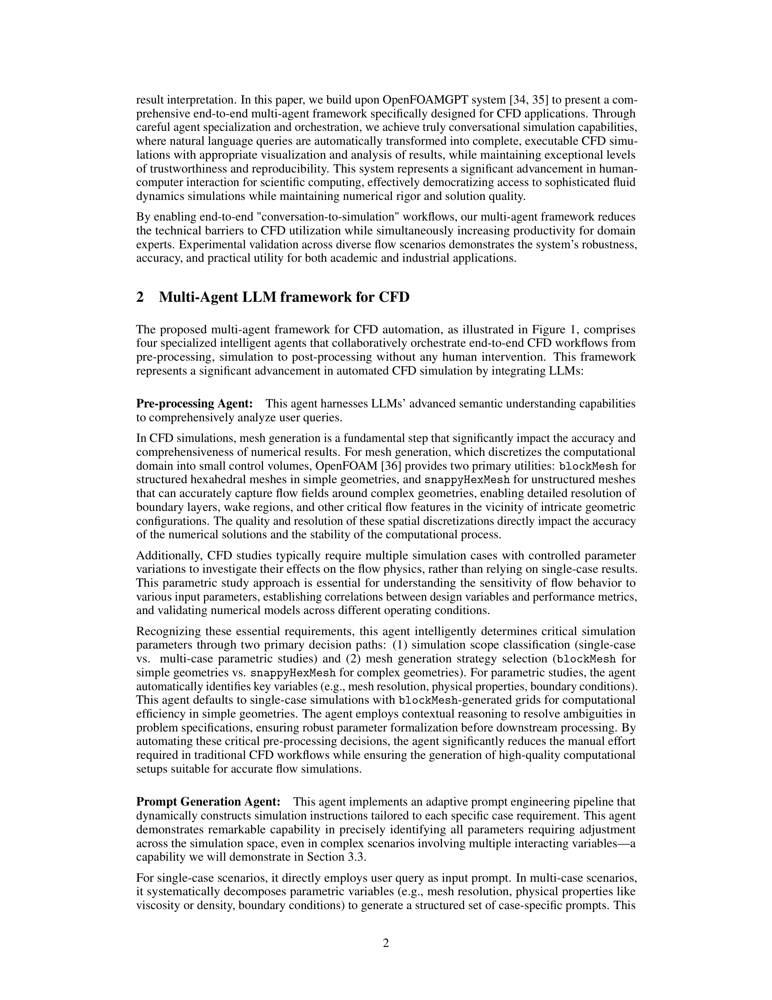

Figure 1
자연어 질의로부터 전처리-시뮬레이션-후처리까지 완전 자동화된 end-to-end CFD 시뮬레이션을 수행하는 최초의 멀티 에이전트 프레임워크를 제안한다. 4개의 전문 에이전트(Pre-processing, Prompt Generation, OpenFOAMGPT, Post-processing)가 Claude-3.7-Sonnet을 기반으로 협력하며, Poiseuille 유동, 다공성 매질 유동, 공기역학 해석 등 다양한 사례에서 450회 이상의 시뮬레이션에서 100% 성공률과 재현성을 달성했다. "대화 기반 시뮬레이션(conversation-to-simulation)" 워크플로우를 통해 CFD의 진입 장벽을 크게 낮추면서도 수치적 엄밀성을 유지했다.
| 에이전트 | 역할 | 핵심 기능 |
|---|---|---|
| **Pre-processing Agent** | 사용자 질의 분석 | 단일/다중 케이스 판별, 메쉬 전략 선택 (blockMesh vs snappyHexMesh) |
| **Prompt Generation Agent** | 시뮬레이션별 프롬프트 생성 | 파라미터 분해, Prompt Pool 관리, 케이스별 독립 프롬프트 생성 |
| **OpenFOAMGPT** | 핵심 시뮬레이션 엔진 | 설정 파일 생성 -> 자동 실행 -> 에러 기반 반복 수정 (self-correcting loop) |
| **Post-processing Agent** | 결과 시각화 및 분석 | Python 스크립트 자동 생성, Paraview VTK, 출판 품질 그래프 |
| 사례 | 반복 횟수 | 연속 시뮬레이션 | 총 시뮬레이션 | 성공률 |
|---|---|---|---|---|
| 단상 Poiseuille | 10 | 1 | 10 | 100% |
| 다상 Poiseuille | 10 | 4 | 40 | 100% |
| 단상 다공성 매질 | 10 | 8 | 80 | 100% |
| 다상 다공성 매질 | 5 | 5 | 25 | 100% |
| 오토바이 공기역학 | 10 | 10 | 100 | 100% |
| 100연속 시뮬레이션 | 2 | 100 | 200 | 100% |
총평: 자연어-CFD 워크플로우 자동화를 end-to-end로 구현하고 100% 성공률을 실증한 실용적 연구로, 멀티에이전트 아키텍처와 OpenFOAM 통합이 유사 도구 대비 차별화된다.